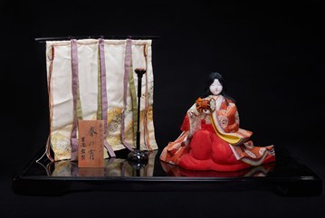

Haru no Yoi （Đêm xuân） là tác phẩm búp bê truyền thống tái hiện hình ảnh một thiếu nữ quý tộc trong không gian tĩnh lặng của đêm xuân – thời khắc được người Nhật yêu mến bởi vẻ đẹp thanh tao và giàu chất thơ. Tác phẩm phản ánh vẻ đẹp duyên dáng của người phụ nữ cùng tinh thần thẩm mỹ đặc trưng của văn hóa Nhật Bản.
Búp bê được tạo hình trong tư thế ngồi trang nghiêm, mặc bộ kimono nhiều lớp với sắc đỏ chủ đạo và hoa văn tinh xảo. Phía sau là bình phong lụa và chân đèn truyền thống, tái hiện không gian trang trọng của cung đình xưa. Khuôn mặt trắng thanh khiết cùng những đường nét tối giản là nét đặc trưng của nghệ thuật búp bê Nhật Bản.
Trong văn hóa Nhật Bản, "Đêm xuân" tượng trưng cho vẻ đẹp của mùa xuân – mùa của sự khởi đầu, hy vọng và sức sống. Tác phẩm không chỉ tôn vinh vẻ đẹp truyền thống của người phụ nữ Nhật Bản mà còn gửi gắm ước nguyện về cuộc sống bình yên, hạnh phúc và những khởi đầu tốt đẹp.
春の宵は、静かな春の宵に佇む貴族の娘の姿を再現した伝統人形の作品です。春の宵は、その優美で詩情豊かな美しさから日本人に愛されてきた時間帯です。本作は女性のたおやかな美しさと、日本文化ならではの美意識を映し出しています。
人形は厳かに座した姿で、赤を基調とした精巧な文様の着物を幾重にもまとっています。背後には絹の几帳と伝統的な燭台が置かれ、かつての宮廷の格調ある空間を再現しています。白く清らかな顔と簡潔な線は、日本人形ならではの特徴です。
日本文化において「春の宵」は、始まり・希望・生命力の季節である春の美しさを象徴します。本作は日本女性の伝統的な美しさをたたえるだけでなく、穏やかで幸せな暮らしとよき始まりへの願いを伝えています。